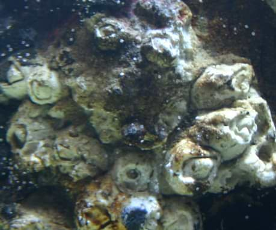

-
ADULT CONTENT
This article contains adult content that may not be suitable for all readers.
Sexual References: Features sexual themes or language, without the depiction of sexual acts.
Sexually Explicit: Description of sexual acts.
Sexual Assault: Features non-consensual sexual acts.
Gore: Depiction of blood, gore or mutilation of body parts.
Child Abuse: Features severe mistreatment of children.
Self-Harm: Description of self-harm.
Suicide: Description of suicide.
Torture: Description of torture.
{$custom-content}If you are age 18 or above and wish to read such content, then you may click Continue to view said content.

Still image from Recording 81-██
Item #: SCP–835
Object Class: Keter
Special Containment Procedures: SCP-835 is to be monitored and checked daily for new growth. In the event SCP-835 becomes hostile, Suppression Tactic A-A6 is to be immediately implemented until aggressive action ceases. Containment area must be maintained in open ocean, due to the highly aggressive response of SCP-835 to confinement for any length of time.
Waste issued by SCP-835 must be immediately collected and contained. Feeding of SCP-835 is to take place twice daily, to consist [DATA EXPUNGED]. SCP-835 may be moved to a new location twice yearly, provided that the current location is no longer capable of supporting SCP-835, and the move has been approved by Site Command.
Staff are to remain at least five meters away from SCP-835. Anyone working near SCP-835 must have safety lines attached to recall winches. Contact with SCP-835 will result in the immediate recall of all staff, and implementation of Suppression Tactic A-A6. Should contact result in full capture of a staff member, SCP-835 is to be monitored constantly until the release of the subject.
Description: SCP-835 appears to be a large mass of coral-like polyps weighing ████ tons. The individual polyps are larger than any known coral species, growing to more than one meter in diameter in some cases. The central mass is roughly oval shaped, with a very large (3 meter diameter) polyp at each “end”. SCP-835 is incapable of locomotion, and appears to anchor itself with the large tentacles projected from the SCP-835 polyps. These are also used in feeding, and are coated with a sticky adhesive substance. The tentacles are also quite strong, and have been shown to be capable of damaging plate steel.
The “coral” of SCP-835 is extremely hard, requiring high-powered diamond drills to collect even small samples. SCP-835 also grows at a very accelerated rate, capable of adding 22.68kg (50lbs) of mass every day. SCP-835 is susceptible to many chemicals, which cause SCP-835 to “seal up” and halt all growth for 24 hours, prompting the development and use of Suppression Tactic A-A6. Testing has shown [DATA EXPUNGED]
SCP-835 emits a large mass of semi-liquid material several times a day from the large polyps on each “end”. This appears to be made of semi-digested solids, fecal material, and semen. This mass also has several forms of virus, bacteria, and parasites, many of which have been found only within SCP-835. The bacterium 835-I5 forms the major concern for containment, due to [DATA EXPUNGED]. This, coupled with the extremely hard “shell” of SCP-835, form a major obstacle to neutralization. Any force capable of “cracking open” SCP-835 would also cause the “slurry” inside to spread, and cause additional infection from 835-I5.
Addendum 835-01: First Draft of After Action Report by Mobile Task Force Zeta-Niner: Circumstances of Retrieval
On ██-██-████ at ████:██:██ hours, Mobile Task Force Zeta-Niner (Mole Rats) conducted an investigation of SCP-835. At this time, SCP-835 had a mass of only four tons, and only one large polyp at the north end of the structure (designated Polyp Alpha), Polyp Bravo not yet being in existence.
As per standard procedure, four team members were chosen for the initial investigation. Standard isolation suits (underwater variant) were worn by all four team members: Lieutenant C█████████ took point as team leader, while Sergeants L██████ and M█████ served as support. Corporal H████, a rookie team member, accompanied the team as an observer. A standard Underwater Remote Vehicle, or URV, was used for initial investigation.
SCP-835 did not, at first, act in a hostile manner towards the team, allowing team members to approach and make contact without incident. URV-01 was sent to investigate the exterior of the object while team members C, L, and M proceeded towards what they believed to be the entrance of the site. Corporal H was ordered to remain outside and to monitor URV-1 in order to ensure that the device's tether did not become tangled on the exterior protrusions.
The first sign of trouble occurred when Corporal H, while attempting to clear a jam in URV-1's sampling claw, reported in with the words, "Oh god, help me, help me." He then reported that "some horrible tentacle thing" had wrapped around his arm and was dragging him in towards a "fucking mouth," and vocalized several distress calls… Jesus Christ. I can't do this. Fucking… goddamn it, he was just a kid! It was his first fucking mission, I should have kept my eye on him!
Christ… all right, here goes, guess I'll just let Sarge edit this for me. Again.
So the thing grabbed the kid. It had me fooled to rights. The entrance wasn't an entrance, it was just… some cave. The real entrance was the big polyp thing on the north end. It grabbed the kid and started dragging him towards the mouth. Topside started to drag him up, but all they got was a snapped cable. And the kid? He got pulled inside and eaten.
[DATA EXPUNGED] I got the carabiner on, we're hooked together, and topside starts winching us up… and we're not getting anywhere. I'm grabbing on, I'm telling him I'm not gonna let go, and then the winch starts to seize up, and I feel this jerk on the tether and it goes slack, and then we're both sliding into that damn thing.
It was like… Jesus, I need another drink… fuck. It was like… the only way I can think of it was like you know that thing that doctors do when they stick a tube up someone's ass and look at the inside of their intestines? I saw that on TV once, it was like that, except I was going down the throat of some horrible underwater hell-monster, not up some poor bastard's rear. There were these… muscular contractions, I guess, and they were slowly sliding us down the length of the tube. If we weren't wearing the hard suits, we'd have been crushed, but as it was, we were held so tight we could barely move, even with power-assist. I managed to get my head up enough to see the kid's face. His faceplate was covered in vomit, poor bastard had puked in his suit. I started yelling for him, trying to get him to say something. He managed to tell me he was all right. He was sobbing like a baby.
I started doing some calculations. Based on my dead reckoning tracker and initial sonar scans, we were moving about a meter every minute. That meant seventy two hours until we came out the other side, assuming we did. We had the air, our rebreathers could keep going for days. What we didn't have was the power to keep the suits warm for that long. If the heat went out, hypothermia would kill us… I dunno, look it up, in any case we'd be dead. We needed to conserve power.
I told the kid to turn off his helmet lights, lock his joints, and turn down his heater to minimal. He started crying. He didn't wanna do it. I didn't blame him, but I told him we had no choice. We finally agreed to shut down everything but our internal helmet lights, at least. It seemed to calm him down, and honestly, that extra 0.1 percent power wouldn't make a difference.
I think that was the worst part. We spent at least a day like that, locked in our suits. Couldn't move our arms and legs. No sound but the thing's gurgling and your own breathing and the sound of your rebreather. The puke on the kid's faceplate started to dry up and flake off about an hour or so in so I could see his face. He looked tired and scared.
I think… check the logs, Sarge, I think it was about thirteen hours in when the kid started talking again. Kid started babbling. [DATA EXPUNGED]. Anyway, after that, he calmed down a lot. I told him to take a nap. He slept a bit, thank god.
About twenty four hours in, we reached… I guess they're calling it the stomach now. First warning sign was a gurgling kind of noise, louder, with a crunching noise over it. I told the kid to bring his suit up to full power and get ready. A little while after, we fell out into this big chamber… big as in, big enough for the two of us to fit in it comfortably, which was huge compared to the tight squeeze of the tube. Kid's suit started hissing and the outer shell started to turn all pitted and stuff, and I noticed my gloves were starting to degrade too, so I yelled at him to move, and we started heading towards this… sphincter, I guess. I remember… god, why can I remember this, the insides of the stomach were lined with [DATA EXPUNGED].
I almost lost it there, [DATA EXPUNGED] I'd stayed, my suit would have melted and I'd be dead, but the kid grabbed me and shoved me headfirst through the sphincter and we fell into… the other place.
It was even worse than the stomach. [DATA EXPUNGED], this place was… well, you know what it was full of. I'm not squeamish, Bill, you can't be if you're a Mole Rat, but this place squicked me out so bad I almost passed out. The kid helped me back up to my feet, though, told me we were almost out. "Come on, Lieutenant, we're almost out of here, let's go," he said. We moved over to the other sphincter, but the thing was… well, it was puckered up tighter than my Drill Sergeant's asshole back in basic. So no way we were getting out of there.
We decided to wait for a bit until the thing shot its load, so to speak: ██ ██ ████ ████ ███ ███, ██ █████ ████ ██ ████ ██ ███ ██████████, █████? Anyway, that's when things started to go bad. [DATA EXPUNGED] I managed to wrestle the thing ████ ███ ████ ████ ███ ███ through the sphincter into the stomach. Its tentacles writhed at me as it started to melt. [DATA EXPUNGED]
Then 835 blew its load and I flew out its ass into the ocean.
You know the rest of the story, Bill. [DATA EXPUNGED] So yeah, fill out the rest of the reports and the logs for me, will ya? Oh, and be sure to edit it so the motherfuckers in command don't yell at me for being unprofessional in my AARs again. I'm gonna finish off my drink and take a couple Valium and go to bed. [DATA EXPUNGED] Thanks.
BY SPECIAL ORDER OF O5-11 ALL EXPUNGED DATA FILES PERTAINING TO THIS REPORT ARE HEREBY RELEASED FOR GENERAL VIEWING. PLEASE SEE REVISED FILE HERE
BY SPECIAL ORDER OF O5-11 ALL EXPUNGED DATA FILES PERTAINING TO THIS REPORT ARE HEREBY RELEASED FOR GENERAL VIEWING. PLEASE SEE REVISED AFTER ACTION REPORT HERE